Querying the Database
In order to implement the relational database planned out in our ERD, we used Sharepoint Lists.
We did this by using the ‘Enforce Unique Values’ setting for fields that act as primary keys, and lookup columns for fields that act as foreign keys.
Lookup columns allow one column in a list to consist only of values that already exist in another table, which ensures that edits are propagated and that cross-referencing between tables works properly.
The combination of these two features also allowed us to enforce the different one-to-one and one-to-many relationships depicted in our ERD.
At the beginning of development, we populated this database with synthetic client and advisor details and used this to build a dummy database of orders.
Below is a section of the OrderDetails table as it appears in Sharepoint.
You can see that the ClientNo and AdvisorNo columns are lookup columns as they are dark blue and can be clicked to open that client or advisor’s full record in its table of origin.
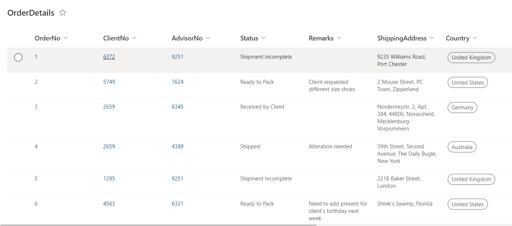
We can then directly connect each list to our app via the Data tab and reference them in our code.
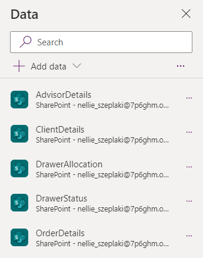
There are 2 main functions used throughout the app to query data. They are the following:
LookUp(), which takes a table and a condition and returns one single record matching this condition. It can also return one field from this record if specified.
Filter(), which acts like LookUp() but returns all matching records as a table.
Certain controls such as galleries can also directly take a list as their data source. Galleries are designed to display a summary of fields from multiple records in a customisable layout.
For example, the Home page uses a gallery to show a preview of multiple orders at once. The gallery itself is directly linked to OrderDetails and each item in the gallery will then,
by default, have easy access to a corresponding record. Below is an example of how easily data can be displayed in a gallery.
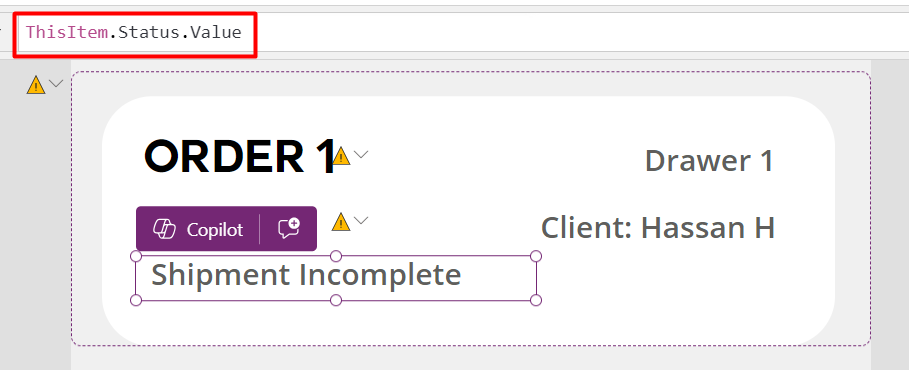
The search feature on the Home page works by passing the input in the search bar to the Items property of the orderGallery.
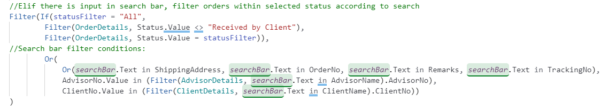
Firstly, orders are filtered based on which status is selected at the top of the page. Because we are originally using the Filter function on the OrderDetails list,
checking if the search input matches the fields within this list is as simple as using the ‘in’ operator. However, to facilitate searching by client and advisor name,
we must first fetch a separate table originating from AdvisorDetails/ClientDetails containing all names that match the search input. Then, we extract only the AdvisorNo/ClientNo column,
and then return any orders from OrderDetails where these numbers appear. The use of Filter instead of LookUp is important here as, if we didn’t return a table of all advisor matches,
a search input of ‘sh’ wouldn’t return orders for both the FAs Shrek and Sherlock in the dummy database.
When one of the items in this gallery is tapped, the OnSelect behaviour is triggered.
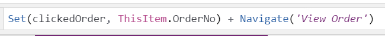
The global variable clickedOrder is defined in order to track which order has currently been selected across screens. In the OnVisible property of the View Order page,
another global variable is defined which holds the entire record corresponding to this order. This is because other pages utilise containers as opposed to galleries,
so the ThisItem keyword can no longer be used. Instead, the thisOrder variable acts as a substitute for this.
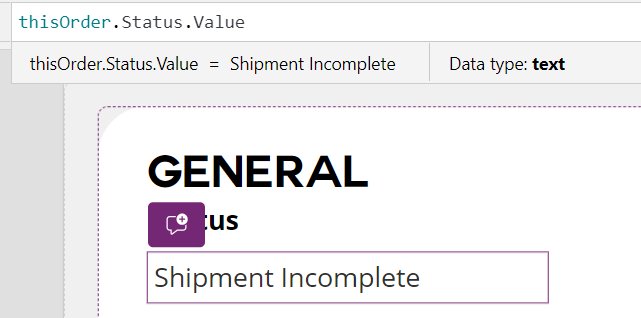
Clients and advisors are linked to orders in OrderDetails using their unique ClientNo/AdvisorNo rather than their names, so the LookUp function must be used in conjunction
with thisOrder to fetch this information from the corresponding table.
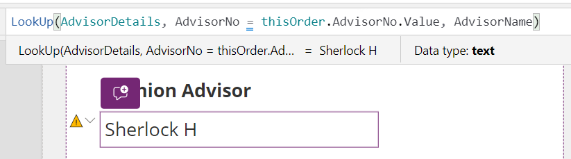
On the view order page there are two different kinds of drop down controls, the Drop Down and Combo Box, the key difference being that combo boxes are more suited to larger data sets
as they have a built-in search feature. Therefore, we used this control for client and advisor selection, where in a boutique setting there is likely to be many people to choose from.
A combo box is also used for country selection, as there are 194 different options.
In the OrderDetails table, both the Status and Country column are Choice columns, which can’t be directly linked to these kinds of controls using a statement such as ‘OrderDetails.Status’.
Therefore, in order to populate these controls we defined two global collections in the OnStart behaviour of the app, which are tables with two rows. The first row, ‘ID’, acts as an index/unique identifier,
and the second, ‘Value’, holds the choices themselves. This is the same format that lookup columns take behind the scenes in order to enforce a one-to-one relationship between foreign and primary keys across tables.
This means the same approach must be taken to submit edits to both of these two types of columns.
Code involving submission of data to the database is in the OnSelect behaviour of the submit button. Firstly, the inputs are validated. Then, a mix of the UpdateIf() and Patch() functions are used, depending on the column type.
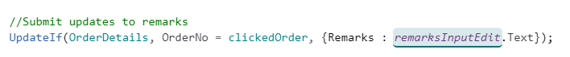
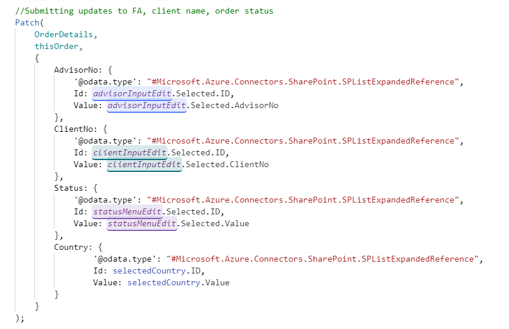
This code snippet demonstrates how the Patch function facilitates the editing of Choice and lookup columns. Providing both the ID and value for lookup column fields ensures the correct related field is being referred to.
Note that UpdateIf cannot be used to create new records, so on the Add Order page only the Patch function is used.
When adding new orders, a new order number is generated based on the number of existing columns in OrderDetails. Received orders remain in the database permanently, so a unique number will be generated for each order.
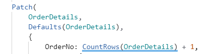
The easiest way to submit attachments using PowerApps controls is with an Attachment card within the Edit Form control. Any changes in the invoice category are then simply submitted with the SubmitForm() function, also included in OnSelect.
With each edit to OrderDetails, updates must also be propagated to the DrawerAllocation table to keep features such as drawer barcode scanning functional.
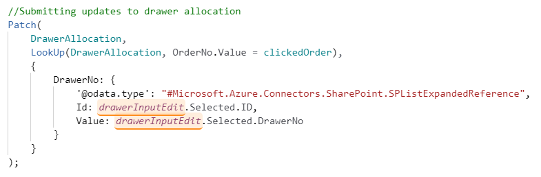
The final part of the app that involves querying the database is the barcode scanning feature. PowerApps contains a built-in barcode scanner, and we generated our barcodes’ values to read as a single integer, the drawer number.
This way we can easily set a global variable, scannedDrawer, to the barcode’s value, and then check which of 3 possible outcomes the scanned drawer leads to:
An empty drawer, which redirects to the Add Order page
A drawer containing one order, which redirects to this order’s View Order page.
A drawer containing multiple orders, which redirects to an intermediary screen for users to choose which order they would like to view.
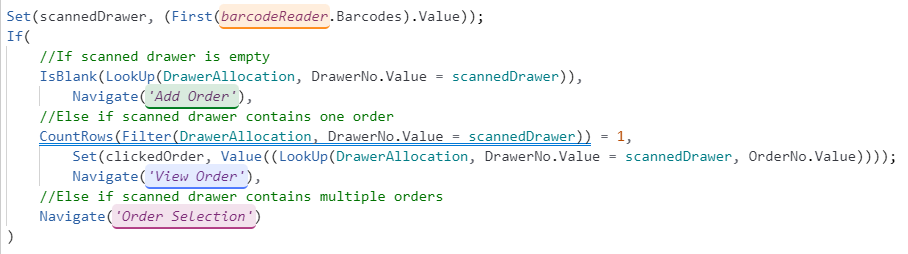
This code in the OnScan behaviour of barcodeReader involves querying the DrawerAllocation, where one record exists for each order and multiple can exist for any drawer. The intermediary Order selection screen uses two nested galleries to
simultaneously display only the orders in the scanned drawer, and display information about each individual order. It does this by filtering the corresponding order records from OrderDetails using the ThisItem keyword.
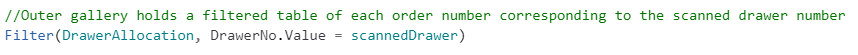
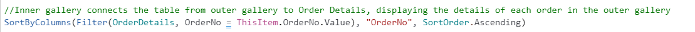